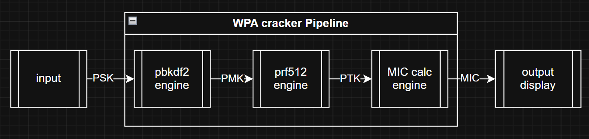
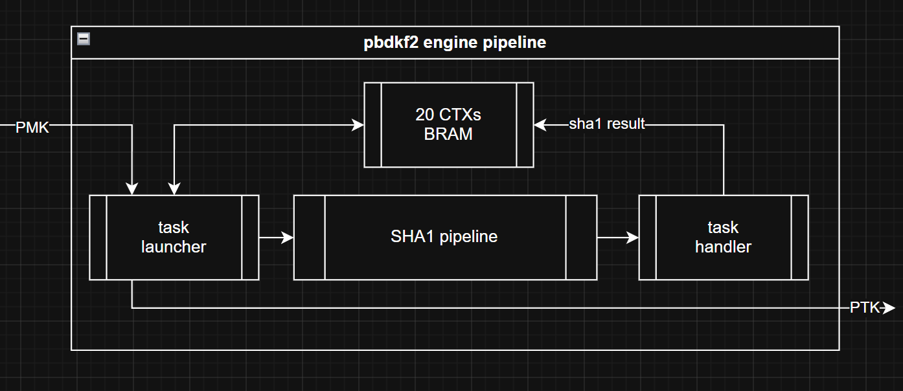

大二下学期的数字逻辑设计课，期末大作业题目自选。班里大多数同学做的是小游戏——贪吃蛇、俄罗斯方块、VGA 弹球。我不太想写这个，倒不是嫌它简单，而是觉得它体现不了 FPGA 的哲学。
FPGA 有意思的地方是另一套完全不同的计算哲学：把一个固定的算法彻底摊开，变成一条为它量身定做的数据通路，用极致的特化去换极致的性能。这条路和 CPU 几乎是正交的。
而用FPGA做小游戏本质上只是用一块很贵的芯片，去做一件 CPU 随手就能做的事。所以我给自己定的题目是：找一个计算量大、结构规整、被反复执行到 CPU 会难受的算法——最终我选择了 WPA2-PSK ，一个常用于 wifi 认证的加密算法。
WPA2-PSK 的字典试探正好是这样一个题目。验证一个候选密码，背后是 16384 次一模一样的 SHA-1 压缩，而且前后严格依赖，单个密码内部榨不出任何并行度——这正是 CPU 最难受、专用电路最舒服的形状。而它的挑战也在于此：FPGA 的时钟频率远低于 CPU，倘若我只实现一个多周期的电路设计，那是无论如何也赶不上 CPU 的速度的。所以我必须采用一切可利用的优化手段，包括但不限于流水线、多上下文调度、并行策略等，来让 FPGA 的破解性能超越 CPU 执行 C++ 破解程序。可以说是自己给自己上了很大挑战了。
整个工程最终有 51 个 SystemVerilog 文件（其中 8 个 testbench）、约 6100 行 RTL、8 个不同的顶层模块（从"裸板点灯"到"完整可演示"），核心开发集中在五月中旬的两周多时间里，同时花费了我大量时间进行调试。
一、WPA2 算法基础
对应演示python程序见文章末尾。
WPA2-PSK 的四次握手，本质上是一套"双方在不传输密钥的前提下，证明彼此持有同一个密钥"的协议。抓到一个完整握手包之后，密码验证可以完全离线完成，一共三步：
其中
关键在于算一道题要多少代价。把上面三步拆成 SHA-1 压缩函数的调用次数：
- PMK 是 256 bit，而 SHA-1 一次只吐 160 bit，所以 PBKDF2 要算 2 个输出块
- 每块 4096 次迭代，每次迭代是 2 次压缩（内层一块、外层一块）
- 于是单个候选密码 =
次 SHA-1 压缩 - 每次压缩 80 轮
如果用一个"每周期算一轮"的串行核，那就是
这个数字对理解整件事非常有用：它解释了为什么 Python 跑一个密码要 3 秒（解释器开销叠在 13ms 上），也解释了为什么 C++ 开 -O2 之后能到 50 个/秒——它已经贴着单核的算术上限在跑了，再优化也只能在那个数量级里晃。
也就是说，瓶颈不在数学，而在于"16384 次一模一样、前后严格依赖的压缩"。这种结构对 CPU 是最不友好的：指令级并行早就被依赖链掐死了，流水线、分支预测、乱序执行全都派不上用场。而这恰恰是硬件能插手的地方。
二、整体架构
系统的骨架是一条 valid/ready 握手的流水线，上下游模块之间弱耦合、高内聚，每个模块只关心"我能不能收、我什么时候能吐"。
graph LR
SD["SD 卡
密码字典 · SPI 10MHz"] -->|xpm 异步 FIFO| FIFO["64 字节定长
密码流"]
SRAM["SRAM
握手参数 81 word"] -->|3 拍一次读| CFG["参数锁存"]
FIFO --> CORE["wpa_crack 流水线
100MHz"]
CFG --> CORE
CORE -->|MIC 比对 / 统计| DISP["HDMI 800x600
+ LED / 七段"]
把它拆开看，核心是一条三级派生的流水线：密码进来先出 PMK，PMK 再出 PTK，PTK 里切出 KCK 去算 MIC，最后拿 MIC 和抓包里的值比对。密码本身也跟着数据一路往下传，用来在命中时回显。

三个输入/输出侧的东西值得一提：
- 握手参数从 SRAM 来。抓包解析、SHA-1 padding、EAPoL 分块这些"一次性"的活全部在 PC 上用 Python 做完，写成一个 81 个 word 的 bin，通过板上 USB 网口灌进 SRAM 的 0x00 起始地址。FPGA 上电后先把这 81 个 word 读进寄存器，再开始干活。
- 候选密码从 SD 卡来。一张卡上按 64 字节一条记录排好，SPI 读进来、跨时钟域、拼成 512 bit，直接往流水线里推。100 万条候选就是 64MB。
- 结果从 HDMI 出来。800x600@60Hz，像素时钟 40MHz，走一个 rgb2dvi 的 IP 核转 TMDS。屏幕上显示状态、已尝试数、速度、耗时、进度条和命中的密码。
整个设计实际跑在三个时钟域上：100MHz 主时钟（算法）、40MHz 像素时钟（显示）、10MHz SPI 时钟（SD 卡）。后面会看到，这张图上的每一条跨域箭头都是踩过坑的。
三、第一版：多周期串行
第一版做的是"能用就行"的版本。一个 PBKDF2 引擎、一个 SHA-1 压缩核（80 拍算完一块）、一个 PRF-512、一个 MIC 计算，全部写成多周期状态机：
1 | typedef enum logic [3:0] { |
每个状态的职责很干净：组合逻辑根据当前状态生成 sha_req_valid、h_in 和 512 bit 的 block，时序逻辑只负责在 sha_done 到来时锁存结果、跳到下一个状态。整个上下文（两个 pad 状态、U、两个累加器、迭代计数）打包成一个 struct packed，一层层往下传。
这一版的价值是把算法跑通、把对答案的机制建立起来：先和 Python 的 hashlib.pbkdf2_hmac 对齐 PMK，再对齐 PRF-512 的 PTK，最后对齐 MIC。三级全部对上之后，你才敢相信后面所有的"加速"没有改坏语义。它的代价也很清楚：80 拍里只有 1 拍在真正算 SHA-1，其余 79 拍都在等。1.31M 拍一个密码，76 个/秒。
四、第二版：把 80 轮摊平
4.1 40 级流水线
要让 SHA-1 吞吐起来，就得把 80 轮拆开。问题是：一轮里有
最后的切法是40 级、每级 2 轮：
1 | module sha1_compress_core_pipeline #( |
（例化时 NUM_CTX 传 20，和上下文数量对齐。）
这样切之后，每一级里是一小段组合逻辑 + 一组流水线寄存器。流水线里传的数据包是：
1 | typedef struct packed { |
有个实现细节值得说：SHA-1 的消息扩展需要 {hist[479:0], w_new} 左移进新的 word，靠 get_word(hist, idx) 按下标取——综合出来就是一大堆多路选择器，但比 80 个 32 位寄存器便宜得多。
反压的处理做得很"朴素"：全流水线共用一个 shift_en，最后一级能走或者空着就整体移位，不能走就整体停一拍。没有做每一级的 skid buffer——因为下游（BRAM 写回）几乎从不反压，没必要为它付面积。
结果是：吞吐 1 块/拍，延迟 40 拍。
4.2 为什么必须有"上下文"
这里有个陷阱。流水线吞吐 1 块/拍了，但 PBKDF2 的 4096 次迭代是严格串行依赖的——
所以真正的并行度必须来自**“同时处理很多个不同的候选密码”**。每个密码有自己独立的一条迭代链，它们之间互不干扰；把 N 个密码的链交错起来喂，就能把流水线填满。
这就是多上下文（multi-context）调度的由来：20 个 PBKDF2 上下文轮流使用同一个 SHA-1 流水线核（收尾时调到了 24，原因见第八节）。每个上下文存的是一整套中间状态：
1 | typedef struct packed { |
20 份这样的结构体、一份 1300 bit 左右，直接铺成触发器就是两万六千多个 FF——再加上 40 级流水线自己的寄存器，FF 和 LUT 立刻就开始紧张了（这一点我是被综合报告教育过的）。所以这 20 份上下文被塞进一块真双端口 BRAM，读写宽度就是整个结构体的位宽，深度就是上下文数量。
4.3 调度器：发射、写回、轮询
整个引擎被拆成三个部分，中间夹着那条 SHA-1 流水线：

- task launcher：轮询 20 个上下文，看谁"下一步该算 SHA-1 了"（状态属于那 6 个需要压缩的态、且
wait_sha == 0），就把任务发射到流水线，并把该上下文的wait_sha置 1；遇到IDLE的上下文就从上游装一个新密码进去，遇到DONE的就吐给下游。 - SHA-1 pipeline：纯计算，
ctx_addr跟着数据一起在流水线里走，出来的时候还带着它，下游靠这个知道"这是谁的答案"。 - task done handler：拿
ctx_addr当 BRAM 地址，把结果写回对应上下文，做状态跳转、累加、迭代计数加一，把wait_sha清掉。
写回这一段为了省一拍，做成了两拍的状态机：第一拍接 valid_out、把地址送进 BRAM；第二拍利用 BRAM 同步读出来的数据做组合计算，下一个上升沿写回。这样一次写回 2 个周期，不需要额外的缓冲。
代价是每次往返变成"40 拍流水线 + 2 拍写回"，这一点在第八节会变得很重要。
五、把变长的东西吃成定长
这是整个项目里最"硬件思维"的一部分，也是我觉得最值得写下来的部分。
SHA-1 处理的是变长消息：密码可能是 8 到 63 个字符，SSID 可能是 0 到 32 字节，EAPoL 帧 99 到 125 字节，每一种长度都要做不同的填充。如果把这个"变长逻辑"放进 FPGA，你得到的会是一堆移位器、多路选择器和按长度分支的状态机——面积大、时序差、还特别容易错。
我的做法是把所有"变长"的活都赶到 PC 上，让硬件永远只看见 512 bit：
| 数据 | 不定长的问题 | 硬件的解法 |
|---|---|---|
| 候选密码 | 8~63 字节 | SD 卡上每条记录补齐到 64 字节，pass_in 恒为 512 bit |
| SSID | 0~32 字节 | 定长 32 字节 + 一个 5 bit 的 ssid_len，硬件按长度取前 N 字节 |
| EAPoL 帧 | 99~125 字节，填充位置随长度变 | Python 侧完成 SHA-1 填充、切成 2~3 个 512 bit 块，硬件只管按序压缩 |
| PRF 消息 | 99 字节 + 1 字节计数器 | 硬件里拼成 128 字节：22 字节常量 + 0x00 + 12 字节 MAC + 64 字节 nonce + 计数器，填充块用纯组合逻辑生成（位置固定） |
这么一换，整个硬件的 SHA-1 输入就只有一种形态：512 bit 一块，按顺序喂。所有 padding 的边界情况都被关在 Python 脚本里，出问题在 PC 上打印出来就能看，不用重新综合 30 分钟。
代价也很实在：换一个握手包就得重跑脚本、重烧 SRAM。这是个静态的、离线的破解器，不是个能挂着抓包的设备。对一个大作业来说这个取舍完全值得。
顺带一个当时被坑了很久的约定——端序。字符串的第一个字节要放在 [511:504]，h_out[159:128] 是 num[31:24] 是高字节。这些东西一旦有一处搞反，SHA-1 出来的结果就是一个"看起来很像但永远对不上"的哈希，而且仿真里你还得逐字节去对。后来专门在文档里写了一节约定，所有模块都按它来。
六、踩坑记录
这部分是我觉得比"最终 1500 个/秒"更真实的东西。当然除了这些坑以外，后面的算账章节我觉得是更有必要优先看的，因为那个坑让我白白损失了流水线一半的吞吐，而只需要改个代码中的常量数字就能让性能提高100%。
1. SRAM 读时序：单独测都对，集成起来就错
文档说板上 SRAM 的读延迟大约 10ns，差不多一个周期，所以我按"两周期读"写了状态机。结果怎么都破解不出正确密码。排查了很久——握手参数是对的、算法是对的、仿真是对的——最后发现从 SRAM 读回来的数据本身就不对。改成三周期读，一次就过。
诡异的地方在于：单独把 sram_param_reader 拿出来测，两周期怎么测都是对的。我猜是集成之后布线压力大、走线延时变长，两个周期真的回不来；而单独测试时布局松散，恰好能赶上。这是那种"仿真、单模块测试、静态时序分析都告诉你没问题，但板子说不行"的问题，只能靠改一个参数试一次来定位，而每次试要 30 分钟。
2. 二进制转 BCD 的组合逻辑，把时序打死了
UI 要显示已尝试次数、速度、耗时。最自然的写法是除 10 取余、逐位转 BCD，但一条 32 位除法/取模在 100MHz 下是一条巨长的组合路径，直接违例。最后的解法很土：全部按十六进制显示。所以现在屏幕上的 Tried、Speed 都是 hex。这不是没做完，是用可读性换时序收敛——一个很 FPGA 式的取舍。
3. BRAM 推断要重新数拍子
20 份上下文和字符点阵 ROM 都是"大的寄存器数组"，改成 BRAM 之后资源才够用。但 BRAM 是同步读，读出来晚一拍，原来按组合逻辑写顺手的状态机会整体错位一拍。每一处从 FF 改成 BRAM 的地方，都得把周围的控制逻辑重新对齐一遍。
4. 三个时钟域
SD 卡的 10MHz SPI 时钟和 100MHz 主时钟完全异步，用 xpm_fifo_async 做缓冲，word_valid/word_ready 两边各自握手。显示侧（40MHz 像素时钟）要读统计数字，每个跨域的多比特信号都打两拍。少打一拍，屏幕上的数字就会随机跳一下——而且这种 bug 是概率性的，你盯着看十次可能只错一次。
5. VGA 时序的流水线错位
从 video 模块吐出 text_display 取字符、char_rom 取点阵、rgb2dvi 编码好几拍延迟。任何一处没对齐，画面不是整体偏移，就是整块点阵循环错位——看起来像"字符在屏幕上转圈"。
6. 迭代成本 30 分钟
Vivado 从综合到生成 bitstream 一次大约半小时，而且基本没法用多核加速。改一行代码的反馈周期是 30 分钟。所以"想清楚再改"不是美德，是不得不——这条经验后来在我写软件的时候也一直受用。
七、结果
| 平台 | 吞吐 | 相对 FPGA |
|---|---|---|
| Artix-7 FPGA（单 PBKDF2 引擎） | 1500 密码/秒 | 1x |
C++ -O2，单核 |
~50 密码/秒 | 1/30 |
| Python 3 | ~0.3 密码/秒 | 1/5000 |
换算成体感：一张装 100 万条候选的 SD 卡，11 分钟跑完；8 位纯数字的完整空间（
这两个数字连起来看其实挺说明问题的：FPGA 把单密码的代价压了 30 倍，但密码空间是另一个维度的事——所以现实中的 WPA2 破解从来不是"算力够不够"，而是"你的字典够不够好"。这也是我做完这个项目之后对"暴力破解"这件事的祛魅。
注：1500 是上下文数为 20 时的实测值。把它改到 24 之后的推算值，见下一节。
TODO：补资源占用与 100MHz 时序收敛的截图（LUT / FF / BRAM / WNS）。
八、事后算账：为什么是 1500，而不是 6100
写这篇文章的时候我回头把数字重新算了一遍，发现有个地方我当时没深究。
流水线吞吐是 1 块/拍，一个密码 16384 块，那 100MHz 下的理论上限应该是：
实测 1500。反推一下：
8.1 逐拍看一次任务的一生
以 ctx#i 在 cycle t 被发射为例：
| 拍 | 发生什么 |
|---|---|
t |
launcher 扫到 ctx#i，判定可发射，边沿写入 wait_sha=1 |
t+1 |
任务进 pipe_reg[0] |
t+41 |
valid_pipe[40]=1，valid_out 拉高；handler 在 IDLE_S 接收 |
t+42 |
handler 进 WB_S，sha_ready=0，写回占用一拍 |
t+43 |
写回完成，wait_sha=0，这个上下文重新可发射 |
t+40 |
launcher 第一次转回 ctx#i —— 结果还没写回，跳过 |
t+80 |
launcher 第二次转回 ctx#i —— 这次才发得出去 |
问题就出在最后两行：一次往返要 43 拍，而一圈扫描只有 40 拍（20 个上下文 × 每上下文 2 拍）。差的这 3 拍不是"偶尔错过"——往返延迟和扫描周期都是常数，相位关系恒定，所以是每次都错过，确定性地损失一倍。
8.2 更隐蔽的：整批上下文在锁步
我写了个逐拍模型跑了一下，稳态下发射间隔的分布很有意思：
1 | 间隔 2 拍: 47500 次 |
也就是：20 个任务以 2 拍间隔密集发出去（占掉 40 拍），然后完全空转 42 拍，如此循环。
因为一圈扫描（40 拍）刚好比一次往返（43 拍）短，20 个上下文在同一圈里被连续发射、完成时刻也挤在同一个窗口；等 launcher 转完一圈回来，这一批全都还没回来，于是整圈全部跳过，等下一圈再一起发射。整批上下文像一列火车，同进同出。
这也解释了为什么是 0.25 而不是"20/43 ≈ 0.47"——轮询 + 固定相位，把连续的空闲量化成了整圈的等待。
8.3 20 是个临界点
发射率不随上下文数量线性增长，而是阶跃的：
| 上下文数 N | 扫描周期 P=2N | 每任务实际周期 | 发射率 | 吞吐 |
|---|---|---|---|---|
| 16 | 32 | 4.00 | 0.25 | ~1526 |
| 20 | 40 | 4.00 | 0.25 | ~1526（实测 1500） |
| 21 | 42 | 4.00 | 0.25 | ~1526 |
| 22 | 44 | 2.00 | 0.50 | ~3052 |
| 24 | 48 | 2.00 | 0.50 | ~3052 |
只要
8.4 改到 24 之后
项目收尾时把 NUM_CTX 从 20 改成了 24，正好落在临界点上面：
| 指标 | 改前（N=20） | 改后（N=24） |
|---|---|---|
| 发射率 | 0.25 /拍 | 0.50 /拍 |
| 名义峰值利用率 | 25% | 50% |
| 推算吞吐 | ~1526 pwd/s（实测 1500） | ~3052 pwd/s（待重新综合实测） |
但这里有个不直观的地方：这套实现的天花板本来就是 0.5 块/拍，不是 1 块/拍。因为 done_handler 的写回要占一拍，那一拍 sha_ready=0，满流水线时整条流水线跟着停一拍——结果背靠背进来时，只能 2 拍消化一个。所以 0.5 的发射率刚好把这条上限吃满：相对名义峰值是 50%，相对这套实现自己的极限已经是 100%。
8.5 还能怎么改
再往上还有改进措施，而且这些改进措施必须一起实现才能生效：
| 改进 | 解决的问题 | 单独做的效果 |
|---|---|---|
| ① 上下文 → 44 以上 | 并发度不足以覆盖 43 拍往返 | 要配合 ② 才能到 1 块/拍 |
| ② 不做轮询，改组合逻辑选取 | 发射被扫描节拍量化 | 要配合 ① |
| ③ 写回也流水线化 | 2 拍/块的硬上限 | 要配合 ①② |
- ① 上下文加到 44 以上：一次往返 43 拍，只有并发度不小于 43 时才可能每拍都有任务可发。代价是 44 × 1329 bit ≈ 58 Kb BRAM，大约两个 BRAM36——相比它换来的吞吐，这个代价可以忽略。
- ② 把轮询换成组合逻辑选取：现在 launcher 严格按
ctx_id轮转，扫到谁就是谁；某个上下文就绪了但错过它那一拍，只能干等一整圈。改成"每个上下文一个ready标志 + 优先级编码器，每拍从所有就绪上下文里选一个发射"，发射就不再被扫描节拍量化。代价是 44 路的选择器加编码器，组合逻辑会明显变长，可能得再打一拍。 - ③ 写回流水线化：给最后一级加个 skid buffer，或者把"接收"和"写回"做成两级流水（两个结果并行写回），解除
WB_S那一拍的全流水线停顿。
三条都做完，才能从 0.5 块/拍回到 1 块/拍，也就是 ~6100 pwd/s，大约现在的 4 倍。
不过说实话，这一节是我写文章时才补上的——当时并没有算。先把流水线搭出来、跑通了、看着比 CPU 快 30 倍就满足了，从没问过"它到底跑到了自己能力的百分之几"。这是个挺典型的教训：流水线本身好做，喂饱它才难。如果重来一次，我会先拿纸笔把"吞吐上限"和"填满它需要的并发度"算清楚，再决定调度器的规模。
九、复盘
- 多引擎并行没做。
wpa_crack_param里留了NUM_PBKDF2参数和一套仲裁逻辑，但 24 份上下文 + 40 级流水线已经很吃资源，再塞一个引擎大概率装不下。而且按第八节的分析，吞吐瓶颈根本不在算力，加引擎是治标。 - PRF-512 和 MIC 是串行的尾巴。它们各自内部只有一个 80 拍的多周期核，一个密码要 14 + 6 次压缩，约 1600 拍。放在 65536 拍的 PBKDF2 后面只占 2.4%，所以当时没管它。但如果把 PBKDF2 优化到 6000 个/秒，这条尾巴立刻就会变成第一瓶颈。
- 诚实地说，这个任务 GPU 赢得毫无悬念。PBKDF2 是纯计算密集、没有不规则访存、没有分支，几乎是 GPU 最擅长的形态；消费级显卡上的 hashcat 在这件事上比我这块板子高两个数量级以上。所以这个项目的价值不在"最快"，而在于第一次完整走通了"算法 → 数据通路 → 状态机 → 时序收敛 → 板级调试"这条链路，而且每一步的代价都能算出来、都能被验证。
十、仓库
代码、模块设计文档、抓包流程和 Python 工具都在仓库里：
vivado/project-template-xilinx.srcs/sources_1/new/— RTL 源码pbkdf2/、pbkdf2_pipeline/— 两代 PBKDF2 引擎sha1core/— 多周期与 40 级流水线 SHA-1 压缩核prf512/、mic_calc/— PTK 派生与 MIC 校验sdcard/、sram/— 两个输入通路output/— VGA 时序、字符 ROM、UI 渲染
doc/— 每个核心模块一份设计文档（状态机、寄存器结构、端序约定）tools/— 密码字典打包、握手参数打包、MIC 参考实现
显示那一侧（VGA 时序、字符 ROM、UI 渲染）是搭档 lgx 一起做的，我只写了算法与输入通路的 RTL。
最后说一句必要的：这个项目只在一个我自己搭的、我有权抓包的实验网络和我自己的路由器上验证过（免责声明）。抓别人的握手包、破解别人的 WiFi，在很多地方是明确违法的，也不值得为一个大作业去做。写这篇文章是为了记录一次有价值的硬件设计练习，而不是为了教人违法破解 WiFi。
目前仓库尚未开源到 github，仍然托管于清华gitlab。如感兴趣欢迎邮件联系，我很愿意分享源代码。
附件
示例程序
1 | import struct |